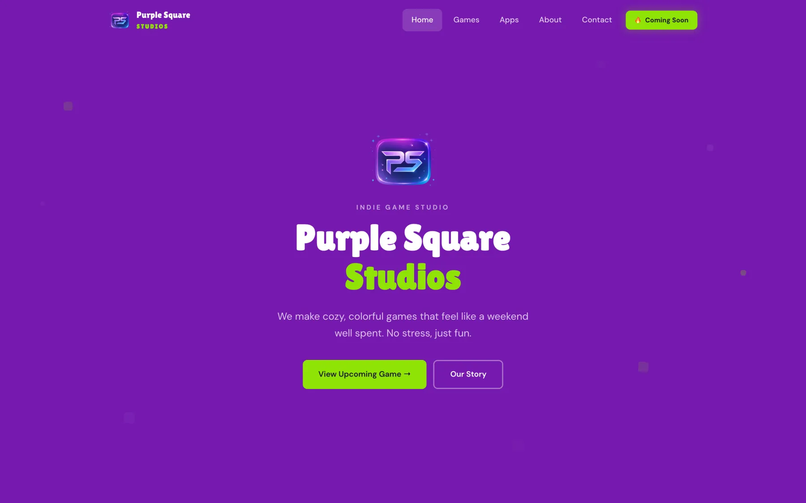
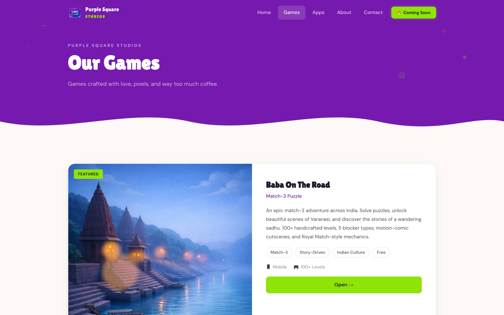
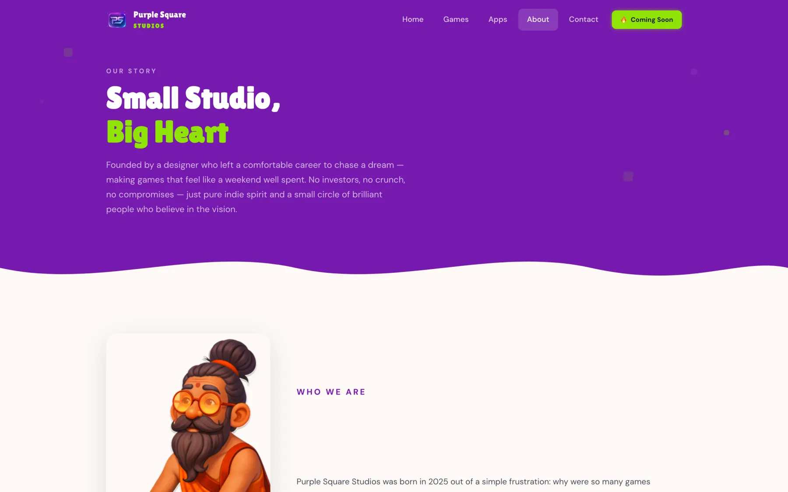
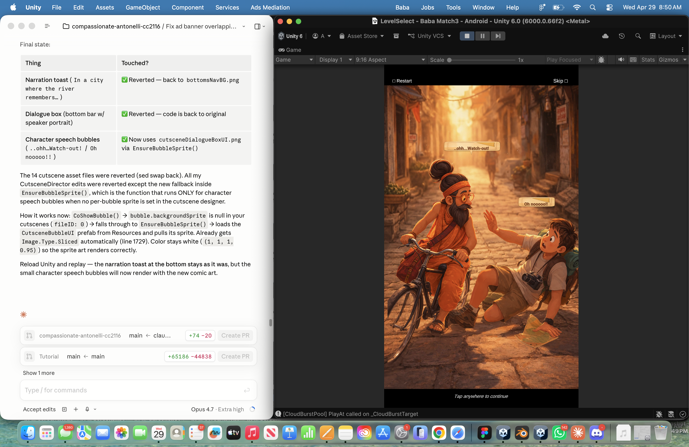

A studio site, a trailer, a store listing — same pipeline.
The marketing surface got the same AI-native treatment as the game. purplesquarestudios.com — designed and shipped as a static site on GitHub Pages — carries the studio positioning ("cozy, colorful games rooted in Indian culture… no grinding, no pay-to-win"), a full game page with story, feature pillars and a waitlist funnel, and the launch plumbing nobody sees: privacy policy, app-ads.txt, data-safety language matching the exact SDK stack.
The trailer was AI-generated video — multiple takes of Baba walking the Varanasi ghats, iterated over two evenings in April — cut with Suno's chapter themes and published to YouTube, embedded in a phone mockup on the game page. Cutscene narration and character lines came from ElevenLabs. The chapter-poster art direction lived in its own generated art bible.
Launch ops was its own education: release keystore created via Unity's bundled JDK when macOS had no Java; signed AABs; Play App Signing; the discovery that a post-2023 personal Play account must run a closed test with 12+ testers for 14 continuous days before production unlocks. And one near-disaster caught mid-upload — renaming the game to "Baba On The Go India" silently changed the Unity package name, which would have broken Firebase and collided with Play's locked ID. "Stop — revert the package name. This is the exact ripple effect I flagged." Product name changed; package ID pinned; crisis averted.
When real testers came back saying levels felt tight, the rebalance was one scripted pass over all 90 level files: original move budgets +25%, curve preserved — followed by an 18-question tester survey (device, stuck levels, unfair-moves check, NPS, cutscene skip rates) to catch what analytics can't.



